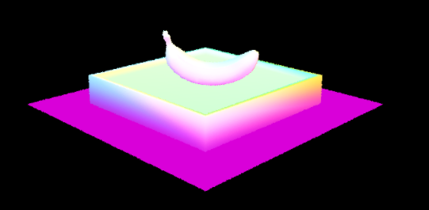

Description
Part 1:

Part 2:
B1
B2


B3


Part 3:
In this part, I implemented direct lighting. To begin, I first created zero bounce lighting, where the light scource has a direct line to the camera. This is extremely easy, as you just have to return the emission from the primitive your ray intersects with.
The next part of direct lighting is one bounce, where a ray is sent to some place in the scene and the amount of light reflected off of that location into the camera is calculated. I added two different types of this. The first uses uniform hemisphere sampling. This function has an input ray and intersect primitive. First, I found the hit point on the primitive and determined the user inputted number of samples taken per ray. Then I iterated through each uniformly distributed random sample, which returns a vector to the sample location. I then create a new ray that originates at the reflective hit point and points in the direction of the sample. I then check if the ray interests with any primitive. If it does, I get the emission from the privitive. If this light points outwards towards the reflective point, I keep track of the amount of light. Then, that amount of light is scaled to take into account the amount of light lost due to the reflection angle (cos(angle from new ray to reflective primitive normal)), the probability of light actually pointing in the right direction (due to being a hemisphere light it's divided by 2*pi), and the bidirectional scattering distribution function (how much light interacts with the surface, which is 1/pi in this case). Then once all of these light values are added due to the number of random samples taken, the total is divided by the number of samples and returned, giving a good estimate of how much light is reflected at this point.
There is another type of direct lighting; importance sampling. This begins similarily to hemisphere sampling, but now I iterated through all of the lights in the scene. If the light is a point light source, then I sample it and create a new ray from the reflected point towards the intersection direction. Because I iterated through each light, instead of random direction, it is possible that there is another primitive in the way, however, blocking the light source from hitting the reflection point. To combat this, I check if the ray intersects with any primitive in a certain range (sampling the light returns the distance to it), and if it does, no light is added. However, if no primitive is hit, then there is a direct ray from the light source to the reflection point, so the value is scaled in the same way that was done in hemisphere sampling. This is only done if the light is a point source, so if the light is a hemisphere source, then I iterate through a user inputted number of samples, check to make sure there isn't another primitive in the way, and scale the light in the same way. In this case, the total light is averaged by the number of samples, unlike for point sources. After all of the light from point and hemisphere sources are added, I return.
Here are some images showing both the hemisphere and importance lighting techniques:
This is a bunny using hemisphere lighting:
This is a bunny using importance lighting:

This is a dragon using hemisphere lighting:

This is a dragon using importance lighting:

This is a sphere scene using hemisphere lighting:

This is a sphere scene using importance lighting:
These next pictures make it clear how increasing the number of samples per light at the reflection point improves the generated image (Using importance light sampling and one sample per pixel for the camera ray).
Here is a sphere scene that samples and generates 1 light ray at the reflection point.

Here is a sphere scene that samples and generates 4 light ray at the reflection point.
Here is a sphere scene that samples and generates 16 light ray at the reflection point.

Here is a sphere scene that samples and generates 64 light ray at the reflection point.
It is fairly obvious that increaing the number of samples decreases the noise. Doing so allows intermediate gray colors to show up and blends the soft shadows, making the images much clearer. This is more noticeable on soft shadows (where a primitive is on the verge of sitting between the reflection point and light source), as the random sampling causes the shadow ray to intersect with a primitive sometimes, but not all. The shadows fully underneath a primitive don't change, as the shadow rays hit the primitive every time.
Another thing that is easily noticed from the pictures comparing hemisphere sampling to light sampling is that hemisphere sampling is significanly more noisy. This is due to the complete randomness in sampling; it is much more unlikely to hit a light source than if you directly point a ray at the light source and see if a primitive is blocking the light (importance light sampling).
Part 4:
B1
B2
B3

B4


B5


B6
B7


Part 5: